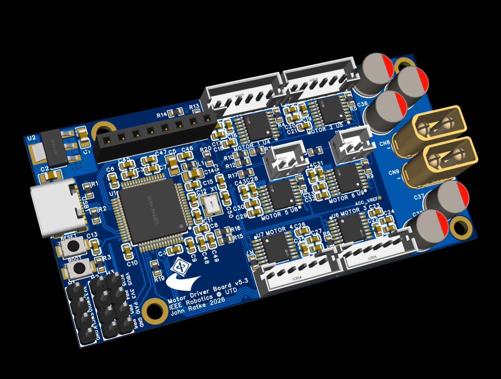
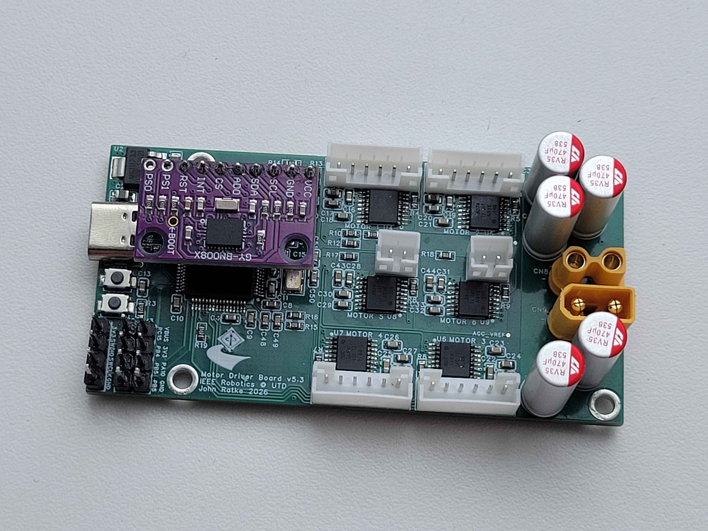
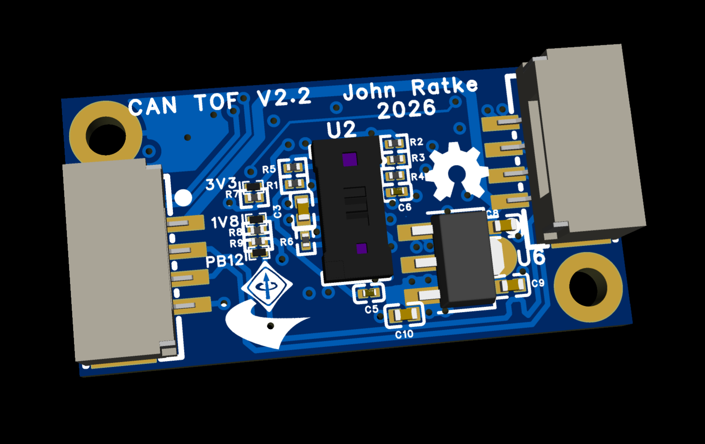
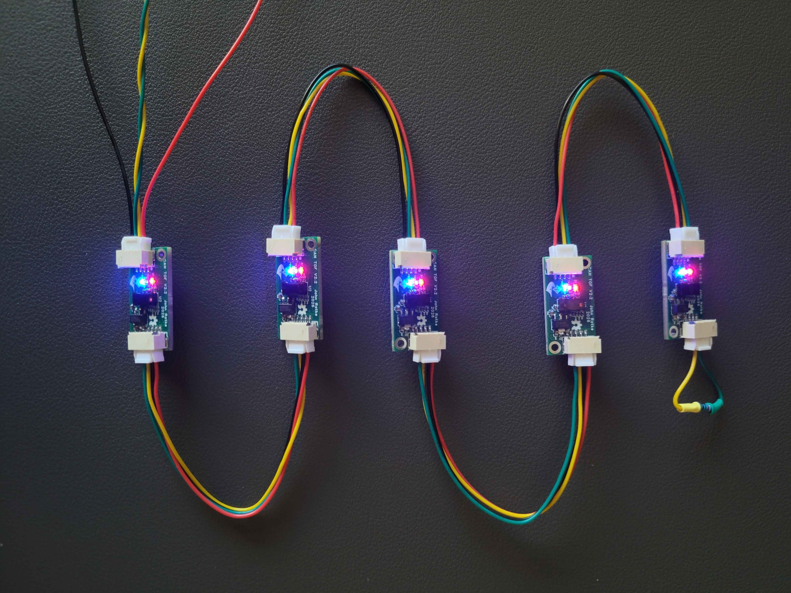
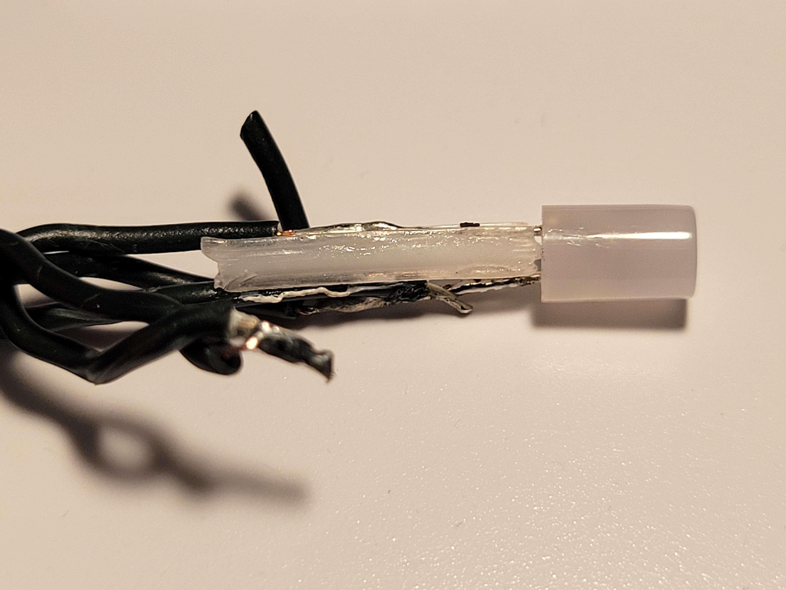
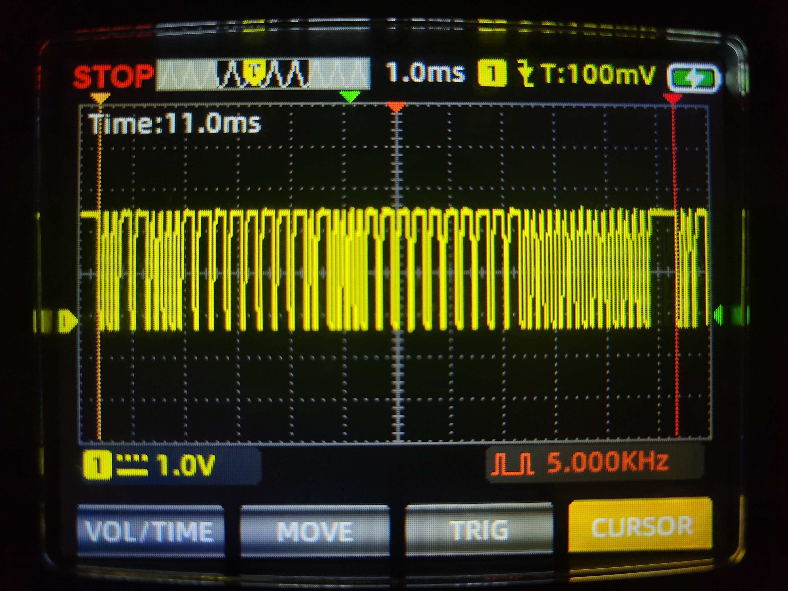
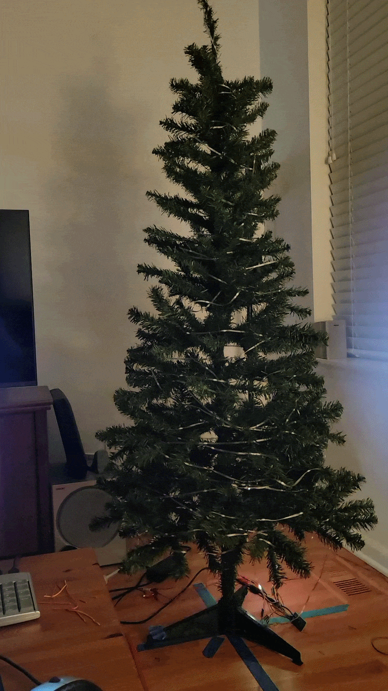
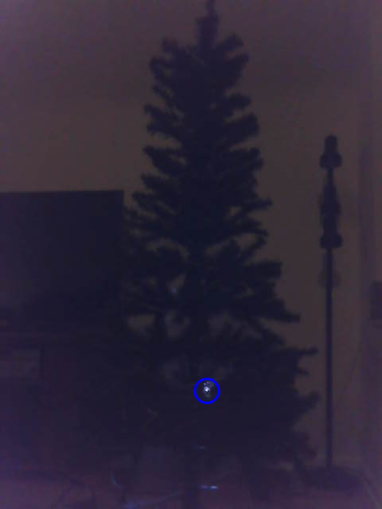

Projects
STM32 Robot Controller (2026)


A motor controller I designed and built for UT Dallas IEEE Robotics' 2026 competition robot. It runs closed-loop velocity control for the four mecanum wheels and handles drivetrain kinematics on-board, so the main computer only sends velocity commands. As team lead, I designed the hardware and firmware myself, learning PCB design along the way.
- Runs a 1 kHz PID velocity loop under FreeRTOS, with communication in a separate 100Hz task
- Appears as a native ROS 2 node over USB-C using micro-ROS on a virtual COM port, with no host-side driver or bridge code
- Publishes a pose estimate from mecanum forward kinematics and an SPI IMU, plus real-time voltage and current telemetry
- Six TI DRV8874 H-bridges (6A peak each) drive the four drivetrain motors and two accessory motors with current limits
View on GitHub
CAN Time-of-Flight Node (2026)


Our 2026 robot used time-of-flight sensors to measure distance to the field walls, but five sensors on one I²C bus failed because each module's onboard pull-up resistors combined in parallel, dropping the bus resistance too low for the devices to drive. I designed a compact CAN node that moves each sensor onto a robust, scalable bus instead.
- Built around ST's VL53L8CX 64-zone ToF sensor, connected to the microcontroller over SPI
- Level shifters bridge the sensor's 1.8V I/O to the 3.3V STM32 microcontroller
- Dual CAN FD + power connectors let nodes daisy-chain on a single cable at up to 8 Mbps
- DMA transfers and interrupt-driven firmware keep up with the sensor's maximum 60 Hz update rate
View on GitHub
DOPLED (2025)


An ESP32 library for controlling low-cost Data-Over-Power LEDs, which receive both power and commands over the same two wires. With no separate data line, wiring is simpler, and the LEDs can be wired in series strings at higher voltage, which means lower current and thinner wire. The protocol was undocumented, so I reverse engineered it.
- Decoded the protocol (8-bit address, 24-bit color) from oscilloscope captures and a custom logic analyzer
- Generates the non-standard pulse timing with the ESP32's RMT peripheral, keeping it off the CPU
- Non-blocking API provides simple commands to addresse LEDs individually and in groups
View on GitHub
3D-Mapped Christmas Tree (2023)


A Christmas tree with 400 addressable LEDs that knows where every LED sits in 3D space. A Raspberry Pi and a webcam map the tree automatically, so animations can move through the tree's actual shape instead of just along the LED strip.
- Located each LED with OpenCV by lighting them one at a time and detecting the bright spot in the camera frame
- Scanned the tree from four sides and merged the views into one 3D coordinate map, stored as a CSV
- Python effects read the coordinates to render spatial animations, like the sweeping planes shown above